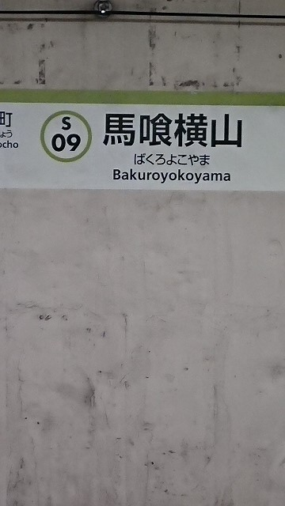

| ・ 第46回可視化情報シンポジウム＠明治大学 (H30.09.14-16) | |||
今年からシンポジウムと全国講演が合体して，シンポジウムになりました．会場もいつもお世話になっていた工学院大学から明治大学へ．去年はM1が2人発表のシンポジウム，最後の全国講演はM1ひとりでした．今年はM1のN谷くんが光計測の研究「ホログラフィックパターンのスペクトル分布に基づいた液滴衝突の検知」を発表しました．写真はN谷くん．なぜか省庁めぐりしてました． |
|||
|
座長参加の村田先生が撮影 |
カテドラル的な | ||
|
見落とした模様 |

N谷くんに受けたようです | ||
|
靖国神社 |
防衛省 | ||
|
議員会館 |
静かな国会前 | ||
|
官邸 |
警備厳重 | ||
|
人が居ない |
国会 | ||
|
国交省 |
警視庁 | ||
|
テレビでみるショット |
庁舎 | ||
|
議事堂 |
秋葉 | ||